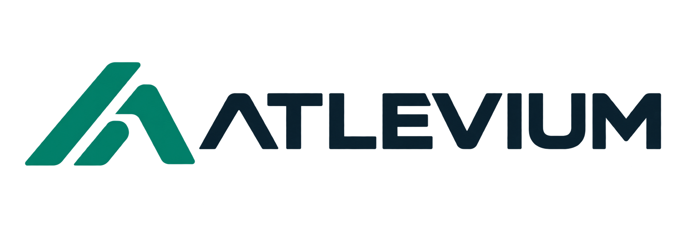

Gestão e pessoas
Organizações, acesso por perfil, atletas, responsáveis, equipes, elencos, modalidades e categorias. Privacidade e histórico de alterações.

Uma plataforma para conectar a gestão esportiva, os profissionais e a população. Proposta de primeira implantação para a Prefeitura de Brotas.
Proposta preliminar · 24 de outubro de 2026.
Desenvolvimento ainda não iniciado. As interfaces existentes são protótipos conceituais.
O foco inicial é organizar a rotina e colocar a operação em uso. Cada módulo será homologado com a equipe indicada pela Prefeitura.
Organizações, acesso por perfil, atletas, responsáveis, equipes, elencos, modalidades e categorias. Privacidade e histórico de alterações.
Turmas, matrículas, frequência básica, agenda, espaços e reservas básicas, com validação de disponibilidade.
Futsal em pontos corridos, calendário, jogos, resultados, classificação, comunicados e consulta pública aos dados autorizados.
Administração web, portal público e aplicativo Flutter com as funções essenciais de cada perfil. Relatórios e exportações essenciais, implantação assistida e treinamento inicial.
Detalhamento de relatórios, permissões, dados importados e critérios de aceite será fechado antes do desenvolvimento. A primeira versão não corresponde a todos os módulos da visão de longo prazo.
Infraestrutura e serviços técnicos integrados ao fornecimento, sem cobrança separada dos componentes previstos no escopo.
Hospedagem do sistema e banco de dados, armazenamento dos documentos previstos, conexão segura e ambientes necessários à operação contratada.
Backups, monitoramento, testes de restauração e manutenção corretiva. Controle de acesso e publicação somente de informações autorizadas.
Treinamento inicial, documentação de uso e suporte remoto em horário comercial. Atendimento e prioridades definidos no contrato.
O ATLEVIUM é um produto genérico, configurado para cada organização. A Prefeitura terá seu ambiente lógico e identidade configurada, com isolamento de dados; não se trata de infraestrutura dedicada ou desenvolvimento exclusivo.
Limites de usuários, armazenamento, disponibilidade, retenção, suporte e importação serão registrados na proposta contratual. Demandas adicionais dependem de avaliação e aprovação prévia.
Prazo-alvo de implantação: até 28 de fevereiro de 2027. Marcos estimados, acompanhados de validação funcional e técnica.
| Período | Entrega prevista | Validação |
|---|---|---|
| Final de outubro | Requisitos, prioridades, regras e critérios de aceite. | Escopo e responsáveis aprovados. |
| Novembro | Fundação, acesso, organizações, pessoas e equipes. | Cadastros e permissões demonstrados. |
| Dezembro | Formação, reservas e núcleo de competição. | Jornadas essenciais integradas. |
| Janeiro | Integração web/app, testes, submissão às lojas e início do piloto. | Uso assistido e registro de ajustes. |
| Fevereiro | Homologação, correções, treinamento e implantação. | Aceite da primeira versão e operação. |
Condição de viabilidade: início imediato após contratação, escopo delimitado e participação da Prefeitura nas validações. Atrasos de contratação, acesso a dados ou homologação exigem replanejamento. Aprovação nas lojas depende também da Apple e do Google.
Valores globais para a primeira versão descrita nesta proposta.
Pagamento único pelo desenvolvimento do escopo inicial, configuração da organização, importação delimitada, homologação, treinamento e entrada em produção.
Condições de pagamento e marcos de faturamento a acordar na contratação.
Uso da plataforma, infraestrutura prevista, backups, monitoramento, manutenção corretiva e suporte remoto conforme os limites contratados.
Cobrança mensal a partir da entrada em produção. Condições de renovação e reajuste a formalizar.
Referência para 12 meses de operação: R$ 110.000
R$ 50.000 de implantação + 12 mensalidades de R$ 5.000. O período de operação começa na entrada em produção; não equivale ao ano civil de 2027.
Escrita offline, novas famílias de regras esportivas, súmulas e arbitragem avançadas, financeiro, incentivos, ICMS, patrimônio, logística, IA e integrações específicas.
Esses módulos não integram o preço nem o prazo da primeira entrega. Sua inclusão depende de escopo, orçamento e cronograma próprios.
O próximo passo é confirmar as prioridades da operação de Brotas e formalizar a proposta contratual.